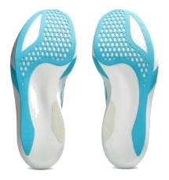
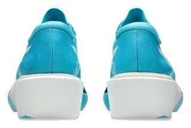

RACE｜カーボンレーサー
163gで、78%。
実測163g、前足部のエネルギーリターン78.2%。性能点4.36はレース部門21足中2位である。しかも¥29,700で、上位のカーボン靴の中では高くない。ただし、この靴は速く走れる人に合わせて作られた尖った靴でもある。
ストライド型のランナー。ハーフからフルでタイムを狙う人。レース専用と割り切れる人。
普段のジョグにも使いたい人。安定性に不安がある人。長持ちを求める人。


実測163gで軽さは5点、反発込みのスピードも5点である。衝撃吸収は147SAあり、軽さのためにクッションを削った靴でもない。
かかとの幅は75.0mmと狭く、ヒール剛性は1。安定性の点は2.0で、ここが最大の割り切りである。
摩耗深度は1.4mm。推定寿命は約400kmで、1kmあたり約74円かかる。レース用の靴として、走る距離を選びたい。
5点満点。計測値を当サイトのルールで点数にしたもの。
スピード5.0、軽さ5.0で、レースで重みが大きい2項目を満点で取った。クッションも4.0、グリップは4.5ある。安定性は2.0、耐久性は3.0と低いが、レース用の靴なので耐久性は性能点に入らない。安定性の低さだけが明確な代償である。
高いほど反発する。
軽いほど短い。
| メタスピード スカイ 東京 | メタスピード レイ | アディオス プロ5 | ヴェイパーフライ 4 | |
|---|---|---|---|---|
| 価格 | ¥29,700 | ¥33,000 | ¥29,700 | ¥29,700 |
| 実測重量 | 163g | 129g | 178g | 166g |
| 衝撃吸収（SA） | 147 | 170 | 149 | 137 |
| エネルギーリターン前足部 | 78.2% | 81% | 80.4% | 74.5% |
| 摩擦係数 | 0.66 | 0.70 | 0.74 | 0.45 |
| 摩耗深度 | 1.4mm | 1.2mm | 1.1mm | 8.6mm |
| 性能点 | 4.36 | 4.42 | 4.14 | 4.09 |
| コスパ点 | 4.5 | 4.5 | 4 | 3.5 |
性能点で上にいるのはメタスピード レイだけである。アディオス プロ5やヴェイパーフライ 4と比べても、点数で上回る。コスパ点も4.5と高い。
摩擦係数は0.66で、アディオス プロ5の0.74には及ばないが、ヴェイパーフライ 4の0.45を大きく上回る。通気性も5段階の5。曲げ剛性は21.1Nと高く、ピッチを刻むよりストライドで走る人向けとされている。
ストライド型向けとされる靴なので、自分の走りと合うかは確かめたい。本番の前に、ペース走やレースペースの区間で一度は履いておくこと。買った靴をそのままフルマラソンに使うのは避けたい。
週15kmの練習量なら、まずデイリーとスピード用が先である。タイムを狙うレースが決まったら候補に入れる。普段履きには使わず、本番と直前の練習に絞れば、寿命の短さも問題になりにくい。
軽さ、反発、クッションの数字はどれも上位で、価格も比較的抑えられている。安定性の低さを受け入れられるなら、最初に試したいレーサーである。
※本記事は海外ラボ（RunRepeat）の計測データとメーカー公表値、当サイトの計算をもとにした分析です。計測はUS9（約27cm）です。1kmあたりの費用は摩耗深度から推定した寿命での概算です。価格は当サイトの掲載値で、変更されている場合があります。